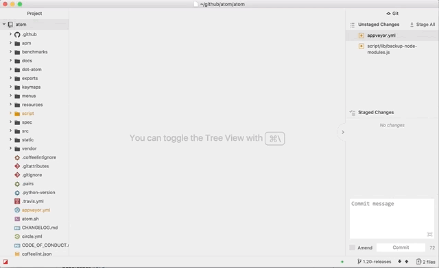
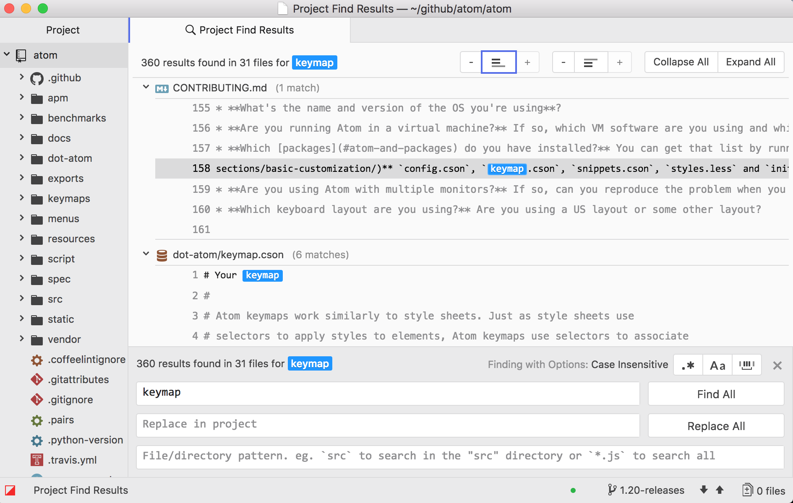

Atom 1.19

Today’s Atom 1.19 release offers improved performance and responsiveness via major architectural updates and an upgrade to Electron 1.6.9.
Improved Responsiveness and Memory Usage
Atom 1.19 introduces a native C++ text buffer implementation that improves responsiveness and memory usage. Saving a file now happens asynchronously without blocking the UI, so that you can move smoothly from one task to the next. Large files now consume less memory, marking another step in our continued drive to provide an excellent experience for all files big and small.
Editor Rendering Layer Rewrite
This release includes a full rewrite of the text editor’s rendering layer. We revisited all of our DOM layout and script interactions with the goal of improving performance, reducing complexity, and taking advantage of new APIs such as intersection observers, resize observers, and CSS containment boundaries. We did an in-depth post about it last month.
Other Notable Changes and Fixes
- Render line number gutter without numbers when showLineNumbers is false
- Improve clarity of Editor not responding actions
- Restore ability for
escapeto return focus to center - Optimize trailing whitespace removal using native buffer search
Don’t forget to check out all the other improvements shipping with this version in the release notes! 
Atom 1.20 Beta

Atom 1.20, released on the beta channel today, features numerous improvements in the github, find-and-replace, and language-php packages.
Git Integration Improvements
The way diff views get opened was reworked resulting in pending pane support and multiple simultaneous diff views:

We’ve also enabled composing commit messages in the main editor for those not into the whole brevity thing.
Find and Replace
Context lines are now optionally displayed with Find in Project results. You can set the number of available lines before and after matches in the package settings and modify their display inline when looking at the results.

Other Enhancements
-
Dozens of fixes for PHP grammar support were made in the
language-phppackage. - Support has been added to bracket-matcher for code embedded in strings.
- We’ve added an API for observing dock visibility.
There are many more details in the release notes.
Get all these improvements today by joining the Atom Beta Channel!